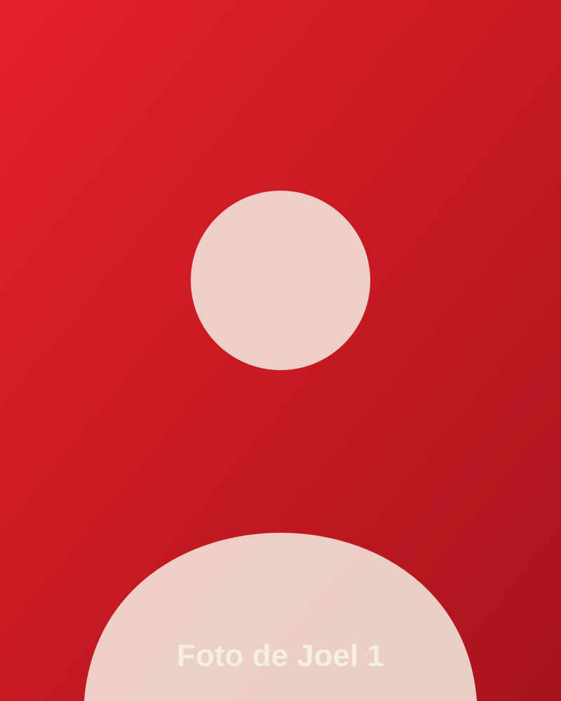
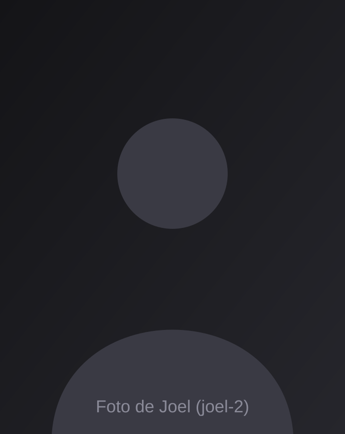
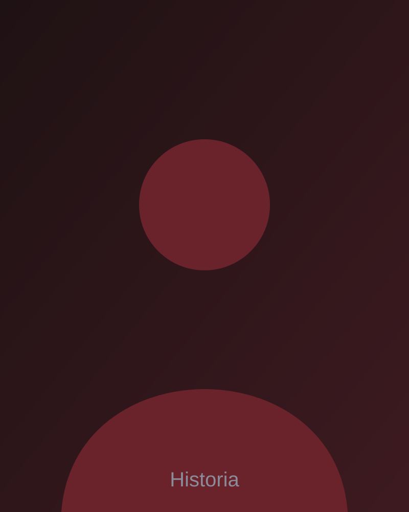
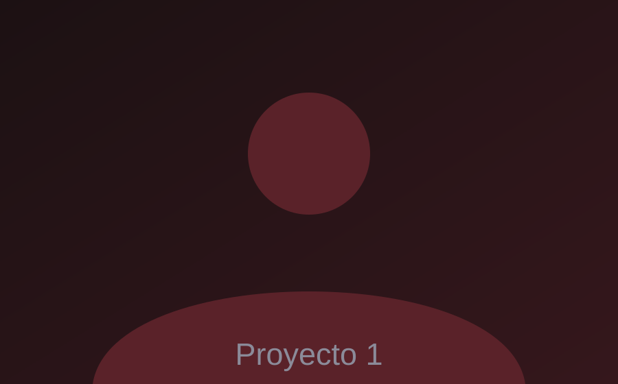
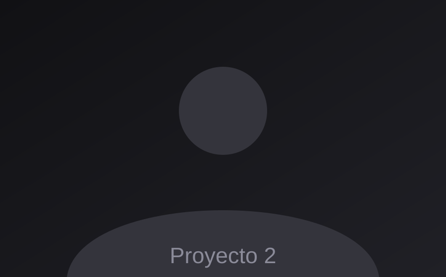
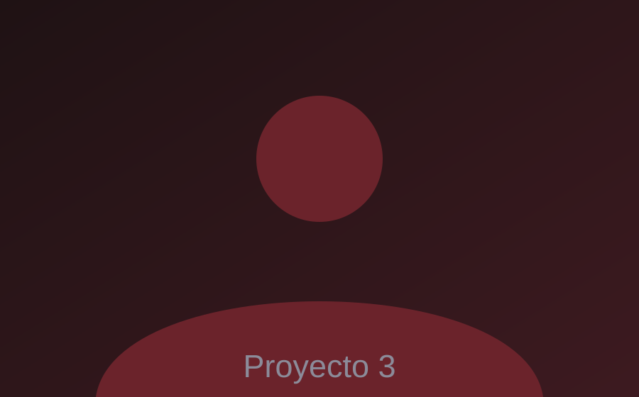
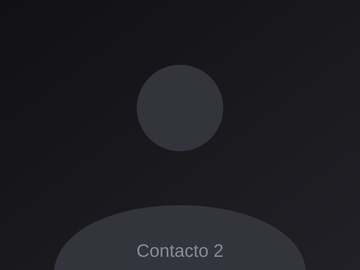

Escucho primero
Antes de decidir, escucho a quien está haciendo el trabajo. Ahí casi siempre está la respuesta.
Soy emprendedor.
Construyo ideas, armo equipos y me rodeo de gente que vale oro.



Soy Joel. Emprendo, lidero equipos y creo que el trabajo rinde más cuando el ambiente es bueno. Prefiero una reunión con risas que una con caras largas, y casi siempre las mejores ideas salen cuando nadie se está tomando demasiado en serio.
Con el tiempo entendí que lo que de verdad se construye en cada proyecto no es solo un negocio: es una red de personas. Socios, mentores, clientes que se volvieron amigos y gente que me dio una mano cuando yo no tenía nada que ofrecer a cambio.
Esta página es mi forma de agradecerles. Y también una invitación: si buscas a alguien que tome decisiones, mueva al equipo y no pierda el humor en el camino, aquí me tienes.
Cuatro etapas que me enseñaron más que cualquier libro.
Todo empezó con una idea y más ganas que recursos. Aprendí que empezar imperfecto es mejor que esperar el momento ideal.
Descubrí que liderar es escuchar. Las mejores decisiones llegaron cuando le di espacio a la gente que hacía el trabajo.
Hubo errores, cambios de rumbo y noches largas. También hubo amigos que se quedaron a ayudar sin que nadie se lo pidiera.
Sigo construyendo, con más experiencia, la misma energía y una red de personas que ya siento como familia.
Antes de decidir, escucho a quien está haciendo el trabajo. Ahí casi siempre está la respuesta.
El buen humor aguanta las semanas difíciles y hace que la gente quiera quedarse.
La confianza se construye con hechos pequeños y constantes, no con discursos.
Tres etapas, tres proyectos. Toca uno para abrirlo.
Donde todo empezó: una idea sencilla que aprendí a convertir en negocio, con errores, clientes reales y mucho aprendizaje. Aquí entendí lo que significa responder por un equipo.

Un proyecto hecho junto a socios y amigos, donde aprendí a delegar, medir resultados y celebrar cada avance, por pequeño que fuera.

Mi proyecto actual: más grande, más claro y construido sobre todo lo aprendido, junto a las personas que me han acompañado desde el principio.

Cada pieza de este corazón es una persona que estuvo en algún momento del camino. Toca una pieza para conocerla.
Dale play y conoce un poco más del camino.
Aquí va tu video. Guárdalo como mi-video.mp4 dentro de la carpeta video.
Reuniones, viajes, equipos y risas. Toca una foto para verla grande.
Si tienes una idea, un proyecto o solo quieres saludar, escríbeme. Siempre respondo, y casi siempre con buen humor.
joel@ejemplo.com